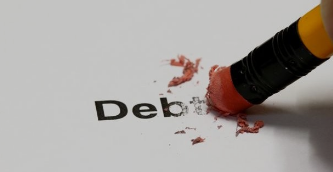

HOW TO PAY OFF DEBT
“Some debts are fun when you are acquiring them, but none are fun when you set about retiring them.” – Ogden Nash
If you’re one of the many Kenyans struggling to manage debt, you aren’t alone. Prices and interest rates alike are high, and it can feel difficult to get out from under payments. Whether you are paying off credit cards, student loans or other kinds of debt, figuring out a plan can cause immense money stress.
Paying off debt isn’t impossible though, even when funds are tight. Budgeting carefully, making strategic payments and negotiating terms are all strategies you can employ to pay off your debts faster.
Why is it important to repay your debt?
There are many reasons why you need to settle your debt. The benefits range from psychological relief to financial prosperity. Here are a brief:
-
Less stress, improved health
- It’s no surprise that owing a large amount of money causes psychological strain, but
did you know that debt is ranked as one of the most stress-inducing life events?
According to research by Kenyan psychological Centre, 2024, 47 percent of respondents who reported that money has a negative impact on their mental health said that debt is their top area of concern.
Therefore, as you are working on improving your mental health, planning your finance and paying your dues on time plays a crucial role.
-
Improve your credit score
- Your credit score acts as a summary of your creditworthiness. A low credit score can
make it hard for you to qualify for additional financing or prevent you from receiving favorable
loan terms and rates. Without financing it can be difficult or impossible to purchase big ticket
items such as a home or vehicle.
Therefore, when you have a good credit score, you will be able to find financing when you need. This is also important to find a bettter interest rate as banks are checking your credit scores to set an interest rate for your financing. Am I helping you to clear your debt just to help you get into another? Absolutely no, but incase you need, and it is extremely important, you can access financing with a lower interest.
-
Make money management easier
- If a large portion of your income is going toward monthly debt payments, you may
struggle with covering you basic needs including rent, and medical bills.
Therefore, try to clear your debt as fast as possible because you don't know about tomorrow. There are the risks of inflation, jobloss, permanent disability or even death.
- Save money on interest fees - Credit cards in particular can take a huge bite out of your wallet in the form of interest charges. The longer you carry a balance on a credit card, the more you’ll end up paying in interest. In fact, the compounding interest on credit cards makes them exceptionally difficult for many borrowers to pay off. Paying off your credit card balances can save you serious money in the long run. In most cases you can save significant funds by paying off your car loan or mortgage early as well. Just be sure to check the fine print on your loan agreement to be sure you won’t face a pre-payment penalty.
- Build your wealth - The less money you’re paying in interest fees, the more money you’ll have to put towards your savings goals such as retirement, college tuition, a down payment, or a dream vacation. Whatever your financial objectives, reducing your overall debt can go a long way toward helping you achieve them.
How to pay-off your debt?
We have so far talked about why it is important to settle your debt ASAP, fun, right? Let us get a little dirty by talking about the steps to settle them. Here are are a few steps to get you there:
- Say no to other debt - In the process of settling your debt, avoid getting into more debt. have a budget and stick to it. Live below your means. You may also consider closing your credit card or atleast do not carry it around.
- Understand your debt - Get a spreadsheet or a piece of paper and pencil to jot dow the details of all your dues. Whom do you owe? What is the balance if you are to pay today? What is the interest rate? What is the minimum monthly repayment? When is the loan due?
- Getting rid of the debt as much as you can instantly - This may include selling of materials that are associated or not associated to debts. This might sound crazy but you have to do everything to reduce the debt.
- Lower the interest rate - repay your credit card dues over the 0% period. Make your billing 100% within the 0% period. Here you will save a lot. You may also renegotiate loan term with the bank and reduce loan period to lower the interest rate. Another option is, refinance loan by going to the competitor financial institution where the interest rates are lower.
- Increase your income - This will help you to have more cash to repay your debt. Invest in your skills and get a second job or side hustle. A small amount of income that is put towards repaying the loan will get a long way in reducing your loan significantly.
- Reduce your expenses - I am not suggesting to you change your life style completely but try to cut some cost. Go through your monthly expenses, jym subscription, insurance, streaming services, eat outs; ask yourself if you can get rid of some and put extra cents in repaying the debts.
-
Snowballing
- This is where you keep repaying the same total monthly deductions even when you have
cleared a loan, of course without taking an extra loan. Let say you are paying a short term
emergency loan with kes 2,000 per month and a student loan kes 4,000 per month. After clearing
the emergency loan, commit the kes 2,000 for repaying the student loan making a total monthly repayment kes 6,000.
Another question comes here is which loan to repay first? logically, repaying the loan with higher interest rate is to be repaid first to reduce interest cost. Emotionally, repaying smaller loan is rewarding as you will feel accomplishment and motivated to clear other loans. I think humans are more of emotions than logic, look for what works for you.
Conclusion
Debt payoff can be a long, tedious journey, but the psychological and financial rewards of doing so will benefit you in the long run. The most important thing to remember on this journey is that you have plenty of options and resources at your disposal. Make sure you’re aware of every alternative repayment option, debt payoff calculator and financial tool (like a balance transfer credit card or a debt consolidation loan) at your fingertips. Once you know your options, stay consistent and remember the long-term goal at hand to set yourself up for steady financial footing in the future. Allow me to conclude with the sayings from Dida - Mysely, "The best money can buy is financial freedom!" Thank you for reading!
Disclaimar
While care is taken to update the information, products and services on this column and our other related websites, there may be inadvertent inaccuracies or typographical errors or delays in updating the information. The material contained in this site and related pages, is for refernce and general information purpose and the details mentioned in the respective of products and services document shall prevail in case of any inconsistency. Subscribers and users should seek professional advice before acting on the basis of information contained herein. Please take an informed decision with respect to any product or services after going through the relevant product/ service document and applicable terms and conditions.
About the Author
Galm Dida - Credit and Investment Coach (KCB - Isiolo) - I am passionate of financial independence for youth and women in marginalized regions. Currently supporting over 15 women and youth groups around Isiolo in the matters of savings and investment. Join us as we inspire the community in financial success.
Contact
Tell: 0741370493 || email: Send me an email || whatsapp: WhatsApp Me
Quick links
Learn more about money market fund (MMF)
Learn the difference between savings accounts and MMF
Learn how and where to save money
Learn how to live within your means